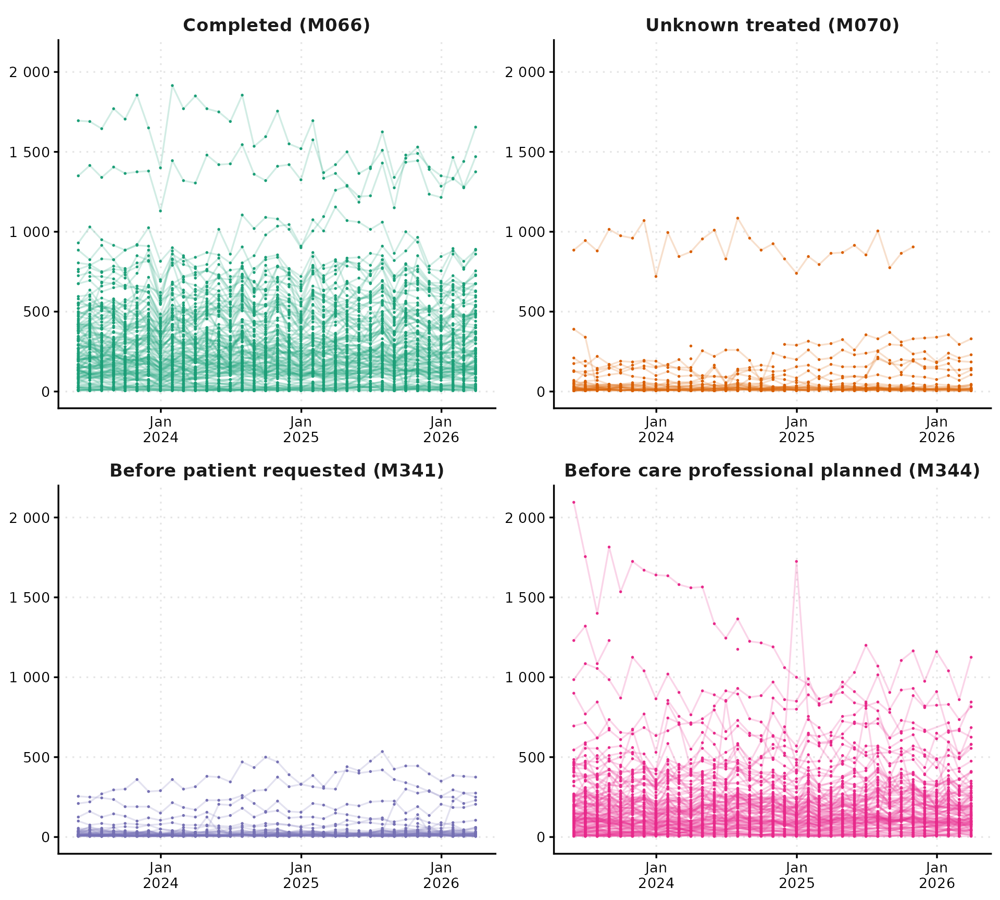
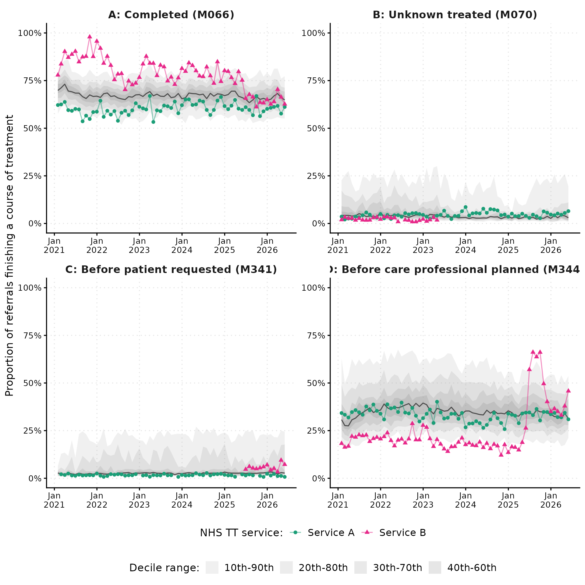

Exploring monthly changes in treatment end codes
Source:vignettes/how-to-activity-performance-monthly.Rmd
how-to-activity-performance-monthly.RmdThis vignette provides the complete R code used to produce the analysis in our blog post published at talkingtherapies.opensafely.org.
The nhstt R package provides a consistent interface for accessing publicly available NHS Talking Therapies (NHS TT) data in a tidy, analysis-ready format. In this vignette we use treatment end codes from the monthly activity and performance data as a worked example, but the same approach applies to any of the measures in the dataset. The examples are descriptive and intended to illustrate what can be done with the data, not to draw conclusions about individual services.
In a blog post published at talkingtherapies.opensafely.org we introduced NHS TT and the detailed aggregate data that NHS England publishes openly. These datasets cover various measures, including referral activity, waiting times, clinical outcomes, and patient-reported outcome measures at monthly, quarterly, and annual reporting periods. The value of these public data has been demonstrated by Clark et al. (2018), who used publicly available NHS TT reports to study between-service variation in clinical outcomes. They found that organisational factors including waiting times, missed appointments, and the proportion of patients receiving a course of treatment were associated with rates of reliable recovery and improvement. This illustrates the broader role of public reporting in supporting transparency, benchmarking, and research on variation in routine psychological therapy services (Clark et al. 2018; Clark 2018). The monthly data complement the annual publications by providing more timely signals for monitoring service activity and identifying measures or periods that warrant closer investigation.
Treatment end codes
When a referral ends in the reporting period, NHS TT services record a reason using a standardised treatment end code. These codes group referral outcomes into three categories: (1) referred but not seen, (2) seen but not taken on for a course of treatment, and (3) seen and taken on for a course of treatment. This post focuses on the last category, which covers patients who received two or more sessions, and captures the recorded reason their treatment ended.
The monthly dataset includes counts for each end code, available from May 2023 to March 2026. The table below shows the five end codes in this group, with total recorded events and the number of services contributing data. The four most commonly recorded end codes are used in the charts below. The Deceased end code (M069) is recorded in too few referrals to visualise. All descriptions of monthly measures implemented in the nhstt R package can be explored online.
| ID | Description | Total events | NHS TT services |
|---|---|---|---|
| M066 | Count of referrals with an end date in the reporting period - Improving Access to Psychological Therapies care spell end code is 'Mutually agreed completion of treatment’ | 1,292,385 | 160 |
| M344 | Count of referrals that ended in the reporting period with an end code of ‘Termination of treatment earlier than Care Professional planned’ | 744,270 | 149 |
| M070 | Count of referrals that ended in the reporting period with an end code of ‘Not Known (Seen and taken on for a course of treatment)’ | 74,100 | 61 |
| M341 | Count of referrals that ended in the reporting period with an end code of ‘Termination of treatment earlier than patient requested’ | 58,940 | 72 |
| M069 | Count of referrals that ended in the reporting period with an end code of ‘Deceased (Seen and taken on for a course of treatment)’ | 50 | 7 |
Monthly trends and variation in treatment end codes
Across 35 reporting periods, these monthly counts make it possible to look beyond annual totals and examine whether patterns in treatment end codes are stable or change over time. We first show service-level trends across all services, then use decile bands to place two example services in context.
Trends across all services
The figure below shows the raw monthly counts for the four most commonly recorded end codes across all NHS TT services. Each line represents one service, showing both the scale of between-service variation and whether it is stable over time. Because these are counts rather than rates, differences between services will partly reflect differences in service size.

End codes for referrals seen and taken on for a course of treatment in the monthly NHS TT dataset: monthly counts across all NHS TT services for the four most commonly recorded end codes.
Across all four end codes, most services record counts within a similar range and follow broadly consistent trends over the reporting period. A small number of services stand out as consistent outliers, particularly for referrals that ended with Completed (M066) and Before care professional planned (M344).
Comparing services with decile bands
The figure below uses decile bands to place the two example services in the context of the full distribution across all NHS TT services. The shaded bands show the distribution from the 10th to the 90th percentile in decile steps, with darker shading closer to the median. A service outside the bands falls in the top or bottom 10% for that month. The width of the bands reflects how much variation there is between services, with wider bands indicating greater spread. These charts summarise activity patterns and are not intended as rankings of service quality.

End codes for referrals seen and taken on for a course of treatment in the monthly NHS TT dataset: decile charts across all NHS TT services for the four most commonly recorded end codes. Shaded bands show the 10th to 90th percentile range in decile steps. The dark line shows the median. Two example services are shown as coloured lines.
Service A sits above the median for completed referrals (M066) and tracks closer to the median for the remaining end codes. Service B records consistently high counts of completed referrals, sitting in the top 10% of services throughout the reporting period, and also starts above the median for end codes before the patient requested (M341) and care professional planned (M344), trending closer towards the median over the reporting period.
Try it yourself
The nhstt package makes it easier to access publicly available NHS TT data, is free to use, and is updated regularly as NHS England publishes new reports. It provides access to each dataset in a tidy, analysis-ready format, with no need to locate or parse the underlying files. Whether you are interested in trends in referral activity, variation in waiting times across services, or changes in clinical outcomes over time, the data are there to be explored. Worked examples and detailed usage guides are available on the nhstt R package website. We recommend checking the NHS England data quality notes before using these data, as they describe known issues affecting specific reporting periods or measures.
If you use the package for a new analysis or have ideas for how it could be extended, we would love to hear about it. For questions or to report an issue, please open an issue on GitHub or get in touch with Milan Wiedemann.